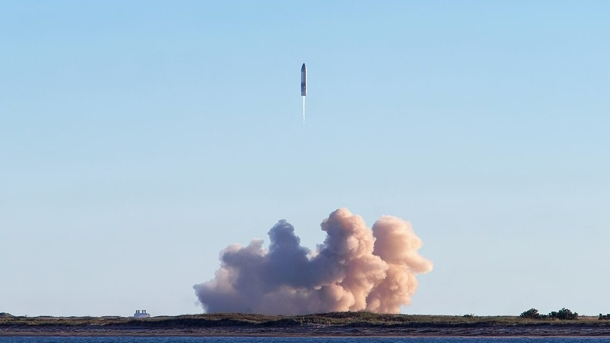

Musk dit qu'il donnera une action SpaceX à chaque enfant d'Amérique
Elon Musk a écrit sur X lundi que l'an prochain il donnera une de ses actions SpaceX à chaque enfant d'Amérique, et que ce sera la première de nombreuses. Au cours de clôture de vendredi, environ 146 dollars, couvrir quelque 73 millions de moins de 18 ans vaudrait entre 10,5 et 10,7 milliards de dollars, mais il n'a donné aucun détail sur la livraison des actions.

Points clés
- Elon Musk a déclaré lundi qu'il donnera l'an prochain une de ses actions SpaceX à chaque enfant d'Amérique, une promesse qui vaudrait environ 10,5 milliards de dollars au cours actuel si elle…
- "L'an prochain, je donnerai une de mes actions SpaceX à chaque enfant d'Amérique", a écrit Musk sur X le lundi 19 octobre 2026.
- Musk n'a donné aucun détail sur la façon dont les actions parviendraient à des dizaines de millions d'enfants, sur le moment des transferts en 2027, ni sur l'éligibilité de tous les enfants.
Elon Musk a déclaré lundi qu'il donnera l'an prochain une de ses actions SpaceX à chaque enfant d'Amérique, une promesse qui vaudrait environ 10,5 milliards de dollars au cours actuel si elle couvre tous les Américains de moins de 18 ans.
"L'an prochain, je donnerai une de mes actions SpaceX à chaque enfant d'Amérique", a écrit Musk sur X le lundi 19 octobre 2026. "Ce sera la première de nombreuses."
Musk n'a donné aucun détail sur la façon dont les actions parviendraient à des dizaines de millions d'enfants, sur le moment des transferts en 2027, ni sur l'éligibilité de tous les enfants. CNN a rapporté qu'on ne sait pas comment les actions seraient distribuées ni si tous les enfants y auraient droit. Investopedia a relevé la même lacune: Musk n'a pas dit comment ni quand le transfert aurait lieu.
L'ampleur de la promesse
SpaceX a commencé à être cotée en bourse en juin 2026, dans ce que CNN a décrit comme la plus grande introduction en bourse de l'histoire. Ses actions ont clôturé vendredi à environ 146 dollars. CNN a évalué l'entreprise à environ 2 000 milliards de dollars.
Le Bureau du recensement des États-Unis compte environ 73 millions de personnes de moins de 18 ans dans le pays. Au cours de clôture de vendredi, une action pour chacune d'elles vaudrait environ 10,7 milliards de dollars, a calculé CNN. Investopedia, à partir des données du recensement et du même cours de clôture, a évalué ce premier don à environ 10,5 milliards de dollars.
Musk est le plus gros actionnaire de SpaceX. En comptant les attributions non acquises et les options d'achat d'actions, il détient près de 50 pour cent du capital de l'entreprise, a rapporté Investopedia. Les actions de la promesse viendraient de sa propre participation, le don serait donc un transfert d'actions existantes, et non de nouvelles actions émises par l'entreprise.
Les actions SpaceX gagnaient environ 1 pour cent dans les échanges avant l'ouverture lundi matin, a rapporté Investopedia.
Une réponse à Anthropic
La promesse est arrivée quelques heures après qu'Anthropic, une entreprise rivale d'intelligence artificielle, a annoncé dimanche qu'elle consacrera au moins 5 pour cent de ses actions à un nouveau fonds d'intérêt public. CNN a rapporté que cette participation vaut 48 milliards de dollars à la dernière valorisation privée de l'entreprise. Anthropic a dit que le fonds pourrait faire de gros dons à des organismes sans but lucratif ou des distributions directes à des groupes précis, et pourrait aider à adoucir l'impact de l'intelligence artificielle sur l'emploi.
Musk a répondu sur X avec une autre approche. "Je recommande de donner les actions directement au public", a-t-il écrit. "C'est ce que je vais faire."
Les deux annonces arrivent à un moment difficile pour le secteur. Les entreprises d'intelligence artificielle font face à la colère du public contre les centres de données, aux avertissements de sécurité sur leurs propres produits et à la crainte que la technologie ne prive les gens de leur travail. Donner au public une participation directe est une façon de répondre à cette colère, même si, dans le cas de Musk, le mode d'emploi manque encore.
Pas le premier plan d'actions pour les enfants
L'idée de mettre des actions entre les mains des enfants est déjà une politique fédérale sous une forme plus petite. Ce mois-ci, le département du Trésor a inscrit automatiquement des millions de moins de 18 ans aux Trump Accounts, un nouveau véhicule fédéral d'épargne et d'investissement, a rapporté CNN. Les enfants nés entre le début de 2025 et la fin de 2028 peuvent recevoir une contribution unique de l'État de 1 000 dollars sur ces comptes.
Musk n'a pas dit si son don utiliserait les Trump Accounts ou un autre programme existant. SpaceX doit publier ses résultats trimestriels mardi et Tesla mercredi, a rapporté Reuters, les investisseurs entendront donc les deux grandes entreprises cotées de Musk quelques jours après la promesse.
Chronologie
- June 2026SpaceX commence à être cotée en bourse, dans la plus grande introduction en bourse de l'histoire.
- Oct 18, 2026Anthropic annonce qu'elle consacrera au moins 5 pour cent de ses actions à un nouveau fonds d'intérêt public.
- Oct 19, 2026Elon Musk publie sur X que l'an prochain il donnera une de ses actions SpaceX à chaque enfant d'Amérique, et dit que ce sera la première de nombreuses.